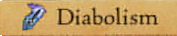
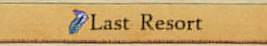
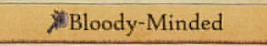
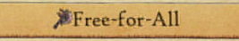
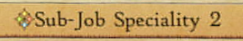

First Turn Kill (Almost) All Bosses in Bravely Default 2
So while playing Bravely Default 2 I accidentally a build that can first turn kill most endgame bosses. This was not the plan, and it trivialised the endgame to the same extent as if I'd just hacked in an infinite damage attack. Ooops. On the upside I'm kinda proud of the build so I decided to write this post explaining what it is and how it works.
Note: This post assumes you are putting this build on Adelle because that's what I did. You can of course put it on whoever you want I ain't yo dad.
SPOILER WARNING: This post talks about some very lategame Jobs/Abilities from Bravely Default 2
The Build:
The basic idea of this build is low health = big damage, and going berserk = free abilities! Making one ability particularly OP and then spamming it to kingdom come is the name of the game.
Classes


Abilities

Equipment (Not optimised. Change it up however you want)

Stats

How to Win
- Get Adelle down to 1HP and at least 58MP. Everytime she attacks her health will drop but it won't go below 1HP, so go ham on some regular enemies until you get there.
- Start the big fight. Adelle shoooouuuld go first, but if she doesn't then just do whatever until her turn comes around
- Brave a full three times. We want to perform as many actions as possible.
- Use Vent Fury for that sweet Berserk damage bonus and Free Attacks!
- Cast Berserker: Death's Door as many times as possible (probably three. three's a good number)
- Watch and laugh as your enemies fall beneath the spicy wrath of approximately 180,000 damage
Extra Recommendations
So Casting Death's Door three times in a turn is nice, but there are a few extra things that can really sweeten the deal. Unfortunately they require a turn setup and poor Adelle is sitting 1 bee sting from death at all times, so here's what you do:
- Setup another team member as a Shieldmaster with big defence and health. They will automatically take all damage directed at Adelle because she's on such low health. This lets you spend turn one doing setup and turn two going HAM.
- On turn one we want to buff Adelle as much as possible. Spend as many Braves as you can afford (we need her to act next turn so avoid going negative).
- Drop whatever buffs you can, I like Phantom Lv 15: Ethereal Edge plus stacking Phantom Lv 2: Become the Lightning (costs 20% HP to cast, so plan ahead. Ideally casting it will drop her HP close to the FUN zone)
- Use Vent Fury. I'd recommend doing this last to save 40MP
- Survive the round
- Pour as many braves as possible into spamming Death's Door FOUR times
- Watch and laugh as your enemies fall beneath the spicy wrath of good CHRIST that just took out the final boss turn 2. Oops.
How does the build work?
So this section exists just to cover EXACTLY how this build works in detail. You can probably work it out from the build itself but screw it I may as well cover all the intricacies just in case.
Low Health = Big Damage
The following abilities Combine to form approximately 8x damage at 1HP
-  increases physical and magical attack when at low health, DOUBLING them when at 1HP
- Berserker's Death's Door attack is Incredibly Powerful AND deals more damage at low health. My testing seems to suggest at 1HP it deals FOUR TIMES more damage.
Then the following abilities make it pretty easy to get to 1HP
-  reduces health every time Adelle attacks but won't reduce it below 1. The reduction seems to be approx 20% of damage dealt.
- Phantom's Become the Lightning costs HP to use so it can bring you closer to that 1HP goal
The following abilities are pretty useful for pushing your damage up even more
- Berserker's Vent Fury nets you a nice 50% damage boost for a few turns
- Phantom's Ethereal Edge makes attacks ignore enemy defences. Nice
- Phantom's Become the Lightning buffs attack by 25%
And of course you need  else your damage will never be more than 9,999 per hit
else your damage will never be more than 9,999 per hit
Make All abilities FREEEEEEEEE(ish)
The following abilities combine to make all your attacking abilities almost free (the setup requires 18MP to start and then 40MP per turn)
-  makes all abilities free whilst you are Berserk
- Berserker's Vent Fury gets you into Berserk nice and easy for 18MP
-  with Berserker as sub job gives you Rage and Reason, which lets you CHOOSE what to do while berserk 50% of the time. This means half your turns will let you just spam your strongest attack if you want.
- Phantom's Specialty 2: Result's Guaranteed will guarantee that Abilities with a CHANCE of occurring will ALWAYS occur at the cost of 40MP. So now you can ALWAYS choose your actions when berserk as long as you have at least 40MP at the start of your turn
Extra Good Things
This is just a few extra things that are included for that little extra spice
- Pushing crit chance high as Phantom is pretty easy, allowing MOST hits to be crits. Extra damage is always nice!
- Pushing Speed up as high as possible is VERY recommended. Starting with 1HP is a risky move unless you also get to go first
- Having a good Shieldmaster in your party is also a good shout. They will automatically take damage instead of Adelle due to her VERY low HP which means she can actually survive a few turns. This can be useful for stacking more buffs if you want, or doing setup turn 1 and Death's Door spam on turn 2
Also I have heard there are weapons which give you certain class passives when equipped. Haven't grabed em myself but if I did I'd aim to open up some ability slots to also add Beastmaster's Brute Force and Raw Power. These two give you a total 80% damage buff when you use 4 brave points in one turn.